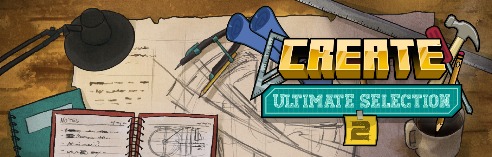

Create Ultimatee Selection 2 — это более масштабная и разнообразная сборка по сравнению с предыдущей. Здесь представлено значительно больше аддонов для Create, что расширяет возможности автоматизации и делает геймплей глубже и сложнее. В отличие от линейной прогрессии, квестовая система здесь построена так, чтобы направлять игрока и помогать не потеряться, но при этом оставлять свободу выбора — чем именно заниматься и в каком направлении развиваться. Также в сборке присутствуют элементы RPG: два магических мода, которые просты в освоении и добавляют интересные механики, новые данжи, враги и боссы. Однако всё это не является обязательной частью прохождения — каждый игрок сам решает, погружаться ли в эти системы или сосредоточиться на технологическом развитии.
← Назад